5580A82 RADAR UNIT for ADAPTIVE CRUISE CONTROL (A.C.C.) - First level alignment
- Path
- Procedures > 55 ELECTRICAL EQUIPMENT > 5580 SPECIAL ACCESSORIES > 5580A CRUISE CONTROL SYSTEM > 5580A82 RADAR UNIT for ADAPTIVE CRUISE CONTROL (A.C.C.) - First level alignment
- Kind
- repair procedure (removal / refitting; the operation number is the code)
- Applies to
- all engines; all production periods
- Interactive page
- https://sloeber94.github.io/elrnDB-lThss/en/#/500221
Applies to: all engines; all production periods
- Check the tyre inlation pressure and, if necessary, correct it.
- Check that the tank is at least 50% full.
- Check the vehicle geometry and, if necessary, correct it.
- Check that the load carrying compartment is empty.
- Check that the battery voltage is > 10.5 V.
1. Position the vehicle in the specially designed calibration area as illustrated in the diagram below, trying to position it at right angles to the sliding guide (1a) for the radar mirror (1b) at a distance of 120 cm (± 5 cm), referring to the lines traced on the ground.
- Connect the diagnostic socket and make sure that all the doors are closed and remain so throughout the entire alignment procedure.
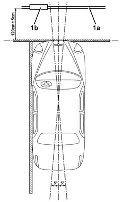
Applies to: all engines; all production periods
1. Fasten the adjustable radar mirror (1a) to the sliding guide (1b) on the same side of the vehicle as the radar is fitted using the locking lever (1c).
2. Check that the mirror (2a) is positioned centrally in relation to the reference lever (2b).
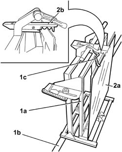
Applies to: all engines; all production periods
1. Move the rapid tightening clamp as illustrated in the diagram.
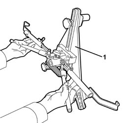
Applies to: all engines; all production periods
1. Secure the rapid tightening clamp to the radar side rear wheel.
2. Fit the laser wheel in the special housing in the rapid tightening clamp.
3. Place the laser wheel in a horizontal position and secure it tightening the locking bolt.
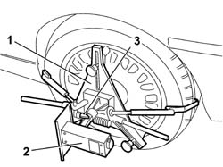
Applies to: all engines; all production periods
- Position the radar mirror opposite the laser source.
1. Using the radar mirror spirit level (1a), adjust the vertical position of the mirror using the special knob (1b).
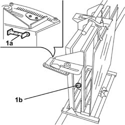
Applies to: all engines; all production periods
- Switch on the laser source.
- Make sure that there is noone and/or nothing in the area between the radar mirror and the laser source.
1. Loosen the radar mirror horizontal alignment device adjustment screw.
2. The horizontal position of the mirror should be adjusted, using the screw, until the laser beam (2a) from the laser wheel, is reflected by the mirror on the vertical line (2b) for the projection surface (2c) of the actual laser wheel.
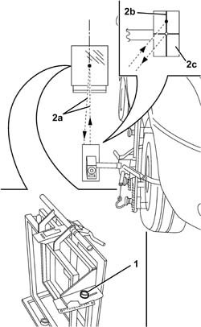
Applies to: all engines; all production periods
- In order to prevent alignment errors due to possible distortions of the alloy wheel rims, rotate the rapid tightening clamp by around 30° in a clockwise direction and memorize the laser reflection point on the laser wheel surface, repeat the operation rotating the clamp through 30° in an anti-clockwise direction in relation to the original position.
1. If the alloy rim is not distorted, the three laser wheel reflection points should be along a vertical line.
2. If the alloy rim is distorted, the two reflection points ( +30°, -30°) may be on the laser wheel emission surface. In this case, position the clamp so that the laser is reflected about halfway between the points. After this the horizontal position of the mirror should be adjusted, using the special screw, until the laser beam is reflected on the vertical line for the laser wheel projection surface.
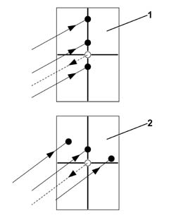
Applies to: all engines; all production periods
1. Rest the diaphragm on the floor and place it directly in front of the laser wheel.
2. Adjust the height of the diaphragm, loosening the vertical adjustment screw (2) so that the radius of the laser (2b) passes through the slot in the diaphragm and is reflected on the mirror.
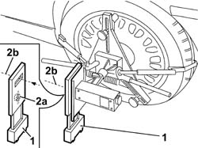
Applies to: all engines; all production periods
1. Position the diaphragm on the floor by the axis for the radar side front wheel hub centre line.
2. Check that the laser beam passes through the slot in the diaphragm and is reflected on the radar mirror. Otherwise, adjust the laser wheel so that the beam is aligned with the diaphragm slot.
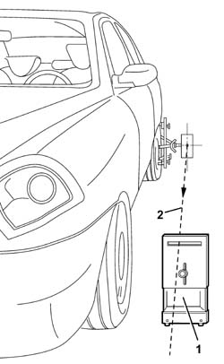
Applies to: all engines; all production periods
- Position the diaphragm once again in contact with the laser wheel in order to check that the diaphragm is correctly adjusted.
- Remove the diaphragm.
1. Adjust the position of the mirror (1a) in accordance with the vertical axis, using the knurled screw (1b), until the laser beam (1c) is reflected near (within a circular area of 1cm in diameter approx) the outlet opening (1d) of the laser wheel projection surface (1e).
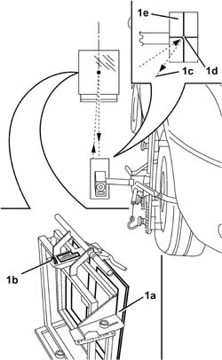
Applies to: all engines; all production periods
1. Read the values shown on the scales "V" (1a) and "H" (1b), for the radar mirror vertical and horizontal adjustments, respectively, and make a note of them.
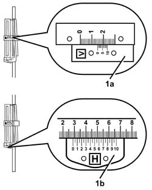
Applies to: all engines; all production periods
- Switch off the laser wheel.
- Remove the laser wheel from the rapid tightening clamp.
- Remove the rapid tightening clamp from the rear wheel.
- Carry out the same operations on the opposite side of the vehicle.
1. Position the radar mirror (1a) in front of the radar (1b) and secure it.
- Check that the mirror is positioned centrally in relation to the reference lever.
- Check the planarity of the radar mirror using the spirit level and, correct it, if necessary.
- Take the average of values "H" and "V" measured during the alignment of the mirror on the two sides of the vehicle and set the average values in the radar mirror using the adjustment screws.
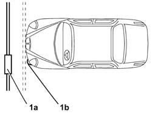
Applies to: all engines; all production periods
- Carry out the radar beam alignment procedure using the Examiner.
- In order to check the operation of the Adaptive Cruise Control, after having aligned the radar beam to the vehicle thrust axis, the following road test must be carried out on all vehicles.
- Start up the engine and let the vehicle reach a speed above 30 km/h.
- Activate the Adaptive Cruise Control (if it was already activated, switch it off and then back on again) and check that there are no malfunction signals in the control panel.
1. Adjust the steering column switch unit lever from low (SET+) and from high (SET-) and remove your foot from the accelerator pedal.
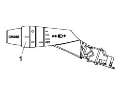
Applies to: all engines; all production periods
- Check that the speed set is shown on the instrument panel display and that the same speed is shown by the vehicle speedometer.
- Operate the SET+ control to set a speed of 70 km/h on the Adaptive Cruise Control: check that the vehicle accelerates correctly.
- Operate the SET - control to set a speed of 30 km/h on the Adaptive Cruise Control: check that the vehicle slows down and the braking system intervenes.
- Get behing a vehicle B which is driving slower than the speed set for vehicle A being tested and check that the Adaptive Cruise Control intervenes slowing down vehicle A and assuming a constant distance from B: check that the presence of vehicle B is shown by the instrument panel display and the time delay of A in relation to B. When overtaking vehicles that are driving more slowly in the right hand lane there should not be inappropriate braking.
- Select a different time distance using the special control and check whether the distance between the two vehicle increases or decreases.